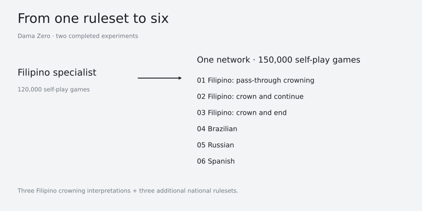
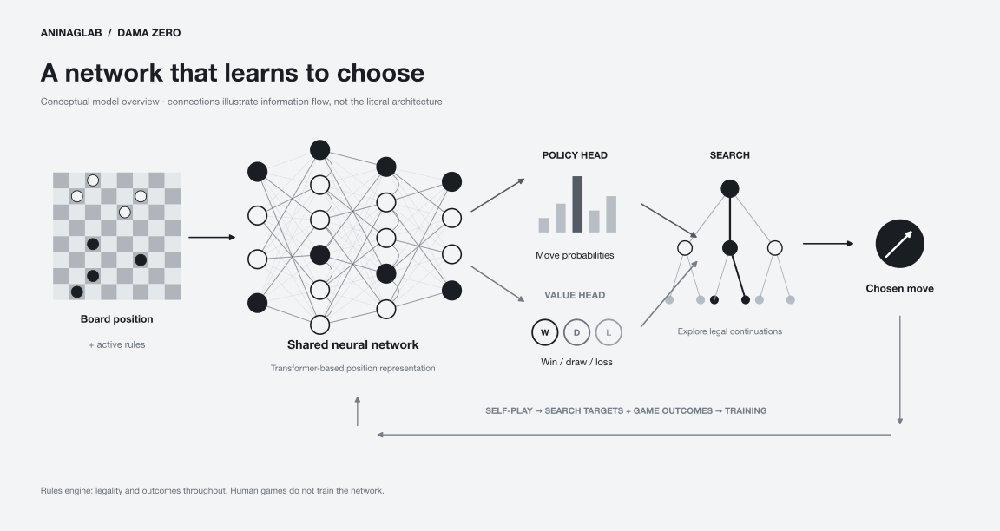
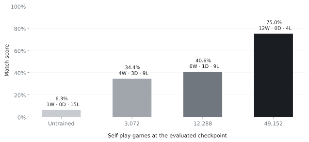
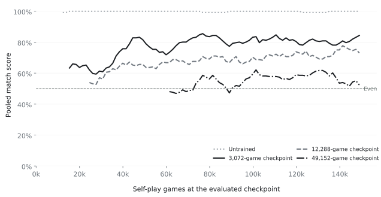

Dama Zero
From a Filipino Dama specialist to one self-play system across six draughts rulesets.
Dama Zero is AninagLab’s first completed reinforcement-learning project: an AlphaZero-inspired system that brings together a rules engine, neural-network training, search, evaluation and an interactive playing interface.
Two training runs are complete: a specialized Filipino Dama agent and a single network covering six rulesets.
From a specialist to six rulesets
The first experiment, dama-zero-1, trained on 120,000 self-play games under a single Filipino Dama ruleset. It established the complete learning and playing pipeline: the agent generated games through self-play, learned from search-derived targets and game outcomes, and was evaluated against earlier checkpoints and fixed opponents.
The second experiment, dama-zero-2, completed 150,000 self-play games across six related rulesets.
Filipino Dama is played with differing local rules and conventions. Dama Zero captures three crowning interpretations: passing through the promotion row without crowning mid-capture, crowning and continuing the capture, and crowning with the move ending immediately. Alongside Brazilian, Russian and Spanish draughts, these form the project’s six supported rulesets.

These differences affect legal captures, promotion and draw conditions. The expanded system uses one network informed by the active rules, with a shared engine enforcing each ruleset.
A single-GPU compute footprint
Both experiments trained on a single NVIDIA RTX A4000 GPU. The Filipino specialist completed 120,000 self-play games in approximately 12 hours 56 minutes; the six-ruleset run completed 150,000 games in approximately 18 hours 11 minutes. Together, the two runs produced 270,000 self-play games in about 31 hours of combined run duration, across 6–7 October 2026 in Philippine time.
Durations are measured between each run’s first and final checkpoint timestamps. They include in-run evaluation and persistence overhead and exclude setup before the first checkpoint.
Learning through self-play
Dama Zero follows the broad AlphaZero approach: a neural network estimates promising actions and game outcomes, while search explores possible continuations. Self-play supplies the experience used to improve the network.

The rules engine determines legal moves and results. It does not prescribe tactics or provide rewards for material advantage. Training rewards come from game outcomes, with search contributing the learning targets.
AninagLab’s achievement is the implementation and integration of this system for Dama: defining the supported rulesets, building the learning pipeline, managing training artifacts, measuring progress and turning trained checkpoints into a playable product.
Dama Zero builds on established reinforcement-learning methods. It is not presented as a new learning algorithm.
The specialist improved against a fixed opponent
The specialist’s recorded benchmark against a fixed material-only alpha-beta opponent provides one concrete measure of learning. Against the depth-6 opponent, the untrained checkpoint recorded one win and fifteen losses. At checkpoint 49,152, the trained agent recorded twelve wins and four losses.

These results show improvement against that opponent under the recorded conditions. They do not establish general competitive strength or performance against tournament-grade draughts engines.
Learning continued, but not uniformly
The final 150,000-game checkpoint has no separate recorded evaluation. The last recorded evaluation was at 148,992 games, 1,008 games earlier. The curves below end at that evaluation.
The six-ruleset run recorded evaluations against fixed earlier checkpoints. Its late Filipino evaluations show clear improvement over the untrained and early checkpoints.

| Fixed opponent | Wins–draws–losses | Match score |
|---|---|---|
| Untrained checkpoint | 128–0–0 | 100.0% |
| 3,072-game checkpoint | 104–8–16 | 84.4% |
| 12,288-game checkpoint | 83–21–24 | 73.0% |
| 49,152-game checkpoint | 53–28–47 | 52.3% |
Each row covers eight evaluations from checkpoints 138,240 through 148,992: 128 games per opponent. Draws count as half a point.
Reporting this plateau matters: completing more self-play games is evidence of training activity, while matched evaluations determine whether playing strength improved. These experiments use different ruleset coverage and evaluation budgets; the figures are not a direct specialist-versus-expanded comparison.
From checkpoints to a playing interface
Dama Zero includes an interactive product for human play, AI-versus-AI spectating and post-game review. Players can select a supported ruleset and a compatible checkpoint, or play against the built-in alpha-beta opponent.
During human games, AI analysis remains hidden until the game ends. Human games are diagnostic observations and do not become training data.
In initial human testing with one search simulation per decision, Dama Zero won all ten games against the developer and all six games played across two public testers. Broader public testing is planned.
These are initial reported observations, separate from the recorded fixed-opponent evaluations. One search simulation remains a search setting; these games are not presented as a verified search-free evaluation.
A completed system, with further evaluation ahead
Dama Zero demonstrates a completed self-play learning system, two finished training experiments and a working product across six defined draughts rulesets.
The available evidence does not establish expert-level play, a formal rating, equal strength across every supported ruleset or superiority to established draughts engines. Comparisons between the specialist and expanded experiments require matched opponents and evaluation conditions.
Filipino Dama’s crowning conventions are represented as explicit project rulesets. They should not be interpreted as a claim that one convention is universally authoritative.
Further evaluation will focus on frozen checkpoints, clearly recorded settings, results separated by ruleset and a broader range of opponents.
Dama Zero is AninagLab’s first completed reinforcement-learning output. This overview documents the system, selected results and the limits of the current evidence.